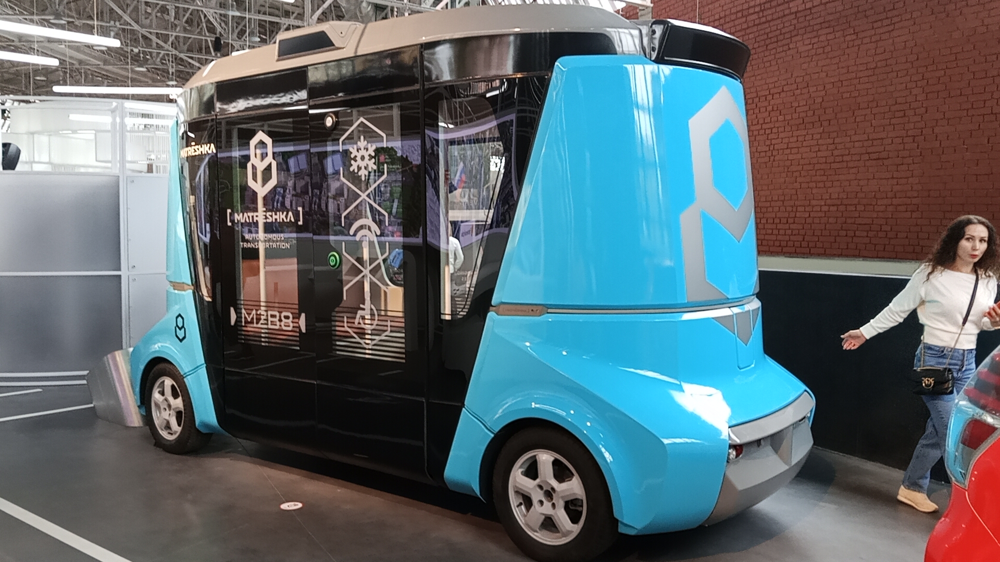
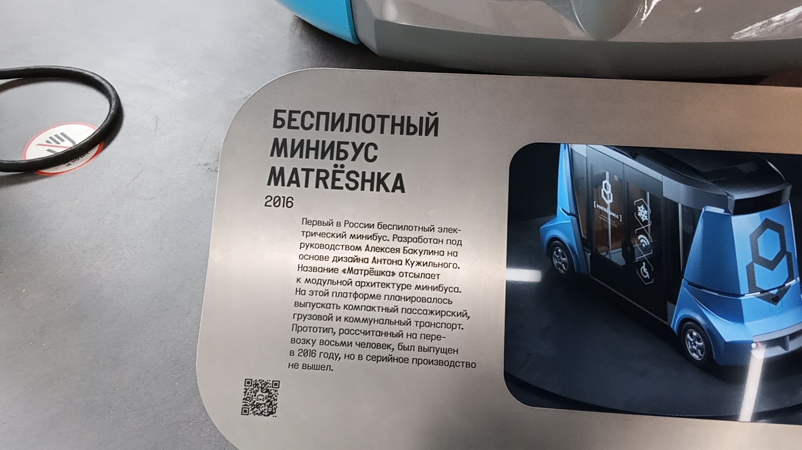

Matrёshka
Matrёshka — первый в России беспилотный электрический минибус. Разработан под руководством Алексея Бакулина на основе дизайна Антона Кужильного.
Название «Матрёшка» отсылает к модульной архитектуре минибуса. На этой платформе планировалось выпускать компактный пассажирский, грузовой и коммунальный транспорт. Прототип, рассчитанный на перевозку восьми человек, был выпущен в 2016 году, но в серийное производство так и не вышел.
Основные данные
| Параметр | Значение |
|---|---|
| Модель | Matrёshka (Матрёшка) |
| Тип | Беспилотный электрический минибус |
| Год выпуска | 2016 |
| Вместимость | 8 человек |
| Руководитель проекта | Алексей Бакулин |
| Дизайн | Антон Кужильный |
| Текущее состояние | Не эксплуатируется (прототип) |
| Назначение | Музейный |
История
Разработка и презентация
Первый в России беспилотный электрический минибус был разработан и представлен общественности. Название «Матрёшка» отсылает к модульной архитектуре минибуса.
Постройка прототипа
Был выпущен единственный прототип, рассчитанный на перевозку восьми человек. Планировалось создать на этой платформе целое семейство транспорта: от пассажирского до коммунального.
Отказ от серийного производства
Несмотря на инновационность, проект не получил дальнейшего развития. В серийное производство минибус не вышел, а единственный экземпляр стал музейным экспонатом.
В экспозиции музея
Сегодня единственный прототип беспилотной «Матрёшки» представлен в экспозиции Музея Транспорта Москвы, как пример смелых, но нереализованных транспортных концепций будущего.
Интересные факты
Модульность: Название «Матрёшка» выбрано не случайно. Конструкция подразумевала модульную архитектуру, которая позволяла бы на одной базе собирать разные типы транспорта, как вкладыши в матрёшке.
Взгляд из будущего: Экспонат демонстрирует, как инженерная мысль 2010-х годов пыталась предугадать развитие городской мобильности. Визуально минибус выглядит как классический фантастический шаттл.
Фотогалерея

Общий вид в музее.

Музейная информация.
Нажмите на фото для увеличения